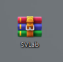
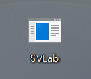
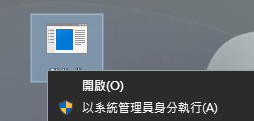
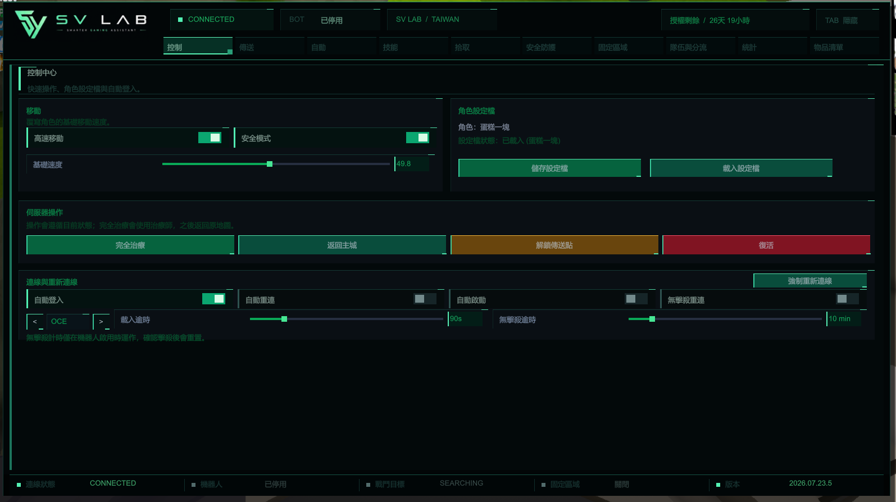

01
STEP 1
下載並解壓縮程式
下載 SV LAB 壓縮檔後，將 SVLab.exe 解壓縮到你想存放的位置。
可放置桌面或建立一個SV LAB專用資料夾，方便之後更新與管理。


INSTALLATION GUIDE
首次安裝約需 2 分鐘。請依照下方順序操作， 即可完成下載、授權與程式啟用。
STEP 1
下載 SV LAB 壓縮檔後，將 SVLab.exe 解壓縮到你想存放的位置。
可放置桌面或建立一個SV LAB專用資料夾，方便之後更新與管理。


STEP 2
請先啟動 SpiritVale 並進入遊戲，再開啟 SV LAB。
STEP 3
在 SVLab.exe 上按滑鼠右鍵，選擇 「以系統管理員身分執行」。

第一次開啟時會出現黑色命令視窗。 請貼上客服提供的授權卡號，再按下 Enter。
授權成功後，下次登入將不需要再次輸入卡號。
STEP 4
回到遊戲後，按下鍵盤上的 Tab 鍵，即可顯示或隱藏 SV LAB 控制介面。

STEP 5
不同職業與玩法需要不同設定。 請觀看下方設定教學影片，再依個人需求進行調整。
設定教學影片準備中
準備中，敬請耐心等候STEP 6
完成設定後，即可開始使用 SV LAB。
FAQ
請確認遊戲已經開啟、SV LAB 已使用系統管理員身分執行， 並且授權卡號已成功啟用。
正常。第一次啟動時需要在黑色視窗中輸入客服提供的授權卡號， 再按下 Enter。
請先完全關閉 SV LAB，再確認 SpiritVale 已經開啟， 最後重新以系統管理員身分執行 SV LAB。